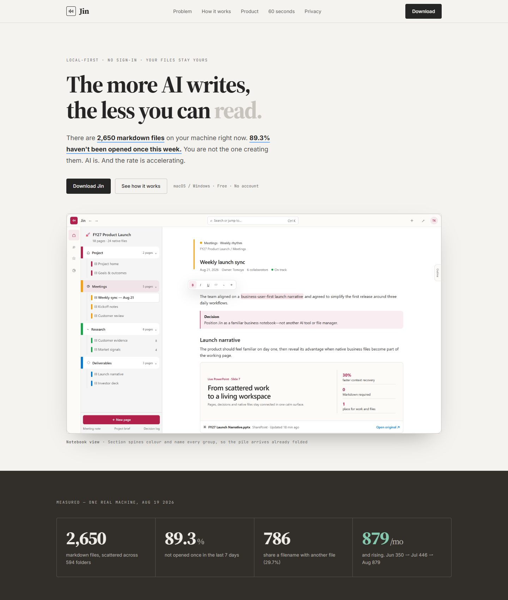
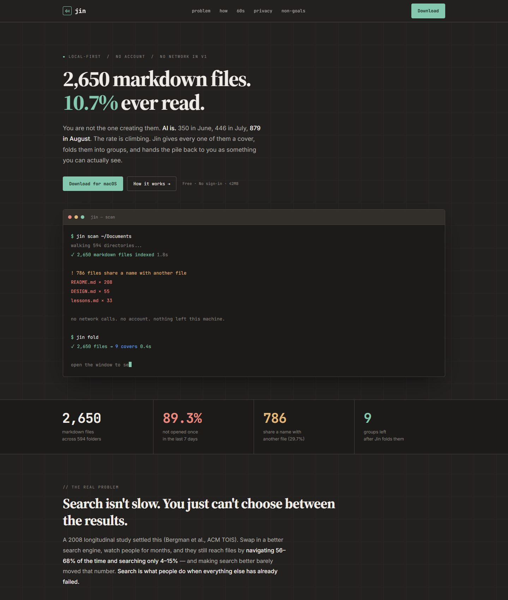
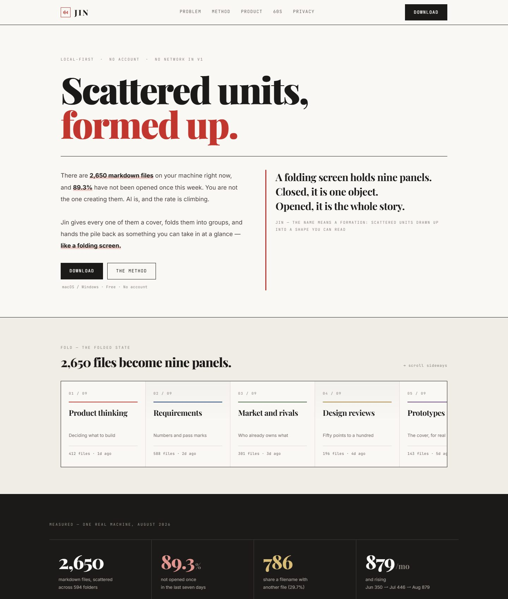

All three are built on one design language: warm paper #f5f3ef, Source Serif 4 headings, JetBrains Mono labels,
hairline rules and a 4px corner radius. Every number on these pages is measured from a real machine, not invented.

Warm paper, serif headings, hairline rules, cobalt accent. The hero shows the product itself — a wall of covers — then folds 2,650 into 9 in front of you. The lowest-risk option, and the one that reads best to people who are not engineers.
Open A →
Dark ground on a faint grid, with a live terminal typing out jin scan. Green as the accent.
It cites the research, tables the non-goals and breaks the 60 seconds into a budget — it earns trust through density.
Strong for a Hacker News or Product Hunt launch, harder for a non-technical buyer.

Takes the folding-screen metaphor literally: the nine groups become nine panels you scroll sideways through. Playfair Display at magazine scale, vermilion accent, zero corner radius, chapters numbered One to Five. The most distinctive of the three, and the most opinionated.
Open C →DESIGN, so speed was never the issue) · the three axes Cover, Fold and Trace · a live fold demo you can toggle ·
the 60-second budget broken into 30 / 10 / 20 · what never leaves your machine · four explicit non-goals · call to action.